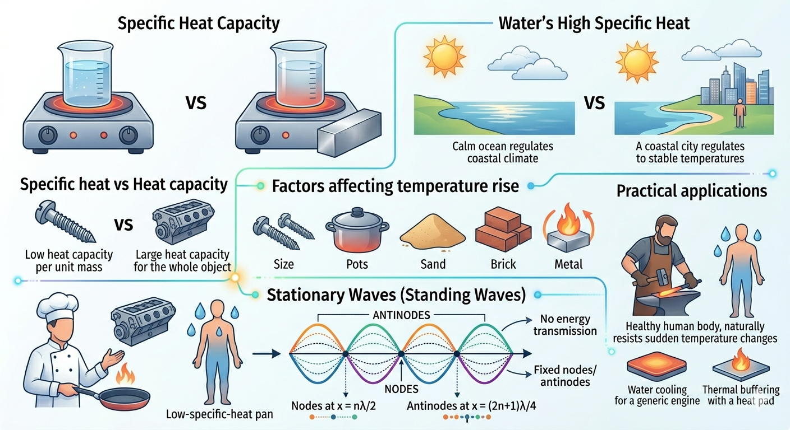

Specific Heat Capacity

Image generated by Google AI
Why does water take longer to heat than metal? Why does sand get hot quickly on a sunny day but cools down just as fast at night? The answer lies in a property called specific heat capacity. This property is not just an abstract number, it is a window into how energy interacts with matter, governing the pace at which substances respond to heat. It helps explain why oceans moderate climate, why cookware is made from certain metals, and even why our bodies resist sudden temperature changes.
Let us understand this concept in depth, and see how it connects everyday observations with the underlying physics.
What is Specific Heat Capacity?
Specific heat capacity is defined as the amount of heat energy required to raise the temperature of one gram of a substance by one degree Celsius (or one kelvin). Think of it as a "thermal inertia", just as mass resists motion, substances resist temperature change.
Mathematically, it is expressed as:
Where:
- \( Q \) = heat supplied (in joules)
- \( m \) = mass of the substance (in grams or kilograms)
- \( c \) = specific heat capacity of the substance
- \( \Delta T \) = change in temperature
SI unit: \( \text{J/kg} \cdot \text{K} \)
CGS unit: \( \text{cal/g}^\circ \text{C} \)
Note: 1 calorie = 4.186 joules. This connection reminds us that specific heat links the microscopic energy absorbed by atoms and molecules to macroscopic temperature changes we can feel.
Heat Capacity vs Specific Heat Capacity
Heat Capacity (C): It is the amount of heat required to raise the temperature of the entire object by 1°C. Heat capacity reflects both the material's intrinsic property and the total quantity of substance present.
So, specific heat capacity is essentially the "per-unit-mass" version of heat capacity. While heat capacity tells us how hard it is to warm the whole object, specific heat tells us how resilient each gram is against temperature change.
Water Has High Specific Heat
Water has a very high specific heat capacity, around \( 4186 \, \text{J/kg} \cdot \text{K} \). This unusually high value arises from the hydrogen bonds between water molecules, which store energy in vibrations rather than translating it immediately into temperature change. That is why:
- Oceans regulate Earth’s temperature, absorbing heat in summer and releasing it in winter like giant thermal batteries.
- Water-based coolants are used in engines, efficiently carrying away heat to prevent overheating.
- Human body (mostly water) resists sudden temperature changes, helping us survive in varying climates.
Interestingly, if you spill a cup of water on a hot pan, it takes time to boil, while metals quickly change temperature because they lack this "thermal buffering" network.
Understanding Through an Example
Suppose you supply 4200 J of heat to 1 kg of water. The temperature of water will rise by:
Compare this with copper, which has a specific heat around \( 385 \, \text{J/kg} \cdot \text{K} \). If you supply the same 4200 J, the temperature rise of copper is much larger:
This simple calculation explains why metal surfaces burn your hands faster in the sun compared to water bodies, despite equal sunlight exposure.
Molar Specific Heat
Instead of per gram or kilogram, sometimes heat capacity is given per mole:
Where \( n \) is the number of moles. Molar specific heat is particularly useful in thermodynamics, especially for gases, because it relates energy changes directly to the number of particles rather than mass. This links the microscopic kinetic energy of molecules with macroscopic thermal phenomena.
Types of Specific Heat
- At constant volume (\( C_V \)): Heat required at constant volume, where no work is done on the surroundings. The energy solely increases internal kinetic energy.
- At constant pressure (\( C_P \)): Heat required at constant pressure, where some energy may do work by expanding the gas, requiring extra energy input.
For gases,
Where \( R \) is the universal gas constant. This elegantly connects microscopic particle motion with macroscopic gas behavior—an insight that underpins engines, weather systems, and even breathing mechanisms in biology.
Calorimetry and Heat Exchange
Calorimetry is the study of measuring heat changes during physical or chemical processes. It rests on the principle of conservation of energy: energy lost by a hot object equals energy gained by a cold one.
Where:
- \( T_1 \), \( T_2 \) are initial temperatures
- \( T_f \) is final equilibrium temperature
This principle explains why mixing hot and cold water results in a predictable temperature, and underlies technologies from calorimeters to HVAC systems.
Factors Affecting Temperature Rise
The amount of temperature increase due to heat depends on:
- Mass: More mass means more "thermal inertia," so temperature rises slower.
- Specific Heat: High \( c \) means more energy is needed for the same temperature rise.
- Energy supplied: More heat causes greater temperature change, but distribution depends on material properties.
Subtle observation: a thin layer of sand heats faster than the ocean surface not just because of low mass, but because its specific heat is small, revealing the interplay of material property and geometry.
Role in Daily Life and Industry
- Cooking utensils: Materials like copper or aluminum with low specific heat heat up quickly, improving cooking efficiency.
- Thermal buffering: Water in hot-water bottles or heat pads stores energy longer, releasing it gradually for comfort.
- Climate control: Coastal areas have moderate climates due to the high specific heat of water, which absorbs heat in summer and releases it in winter, acting as Earth’s giant heat reservoir.
- Metallurgy: Understanding temperature changes during heating and forging ensures metals reach desired properties without cracking.
Mechanical Work and Heat
Mechanical work (like hammering or friction) can convert kinetic energy into heat, raising an object’s temperature. Imagine a blacksmith hammering a red-hot nail: each blow transfers part of the hammer’s kinetic energy into the nail’s molecules, increasing internal energy.
Kinetic energy:
If only a fraction of this energy is absorbed, the resulting temperature rise is:
Note: Efficiency depends on contact area, material properties, and energy losses like sound or deformation. This principle is used in industrial forging, friction welding, and even in designing safety gear against impacts.
Shortcut Concepts
- Specific heat \( c \): Heat required per unit mass per unit rise in temperature.
- Formula: \( Q = mc\Delta T \)
- High \( c \) → heats up slowly; low \( c \) → heats up quickly.
- Water has highest known specific heat among common substances, making it an excellent thermal buffer.
- \( C = mc \), heat capacity is the total heat needed for the object.
- Mechanical energy can convert to heat, causing temperature rise depending on material and energy transfer.
Quick Review Questions
-
What is the unit of specific heat capacity in SI?
\( \text{J/kg} \cdot \text{K} \) -
What is the specific heat of water?
Approximately \( 4186 \, \text{J/kg} \cdot \text{K} \) -
If you supply 1000 J to 500 g of copper (\( c = 0.385 \, \text{J/g°C} \)), what is the temperature rise?
\[ \Delta T = \frac{1000}{500 \times 0.385} \approx 5.19^\circ C \]
-
Which heats faster: water or copper?
Copper, because it has lower specific heat, demonstrating the difference in thermal response between metals and liquids. -
What is the relation between \( C_P \) and \( C_V \) for an ideal gas?
\( C_P - C_V = R \)
Previous Year Question (PYQ)
Q.1
A 100 g of iron nail is hit by a 1.5 kg hammer striking at a velocity of \( 60 \, \text{ms}^{-1} \). What will be the rise in the temperature of the nail if one-fourth of the energy of the hammer goes into heating the nail?
[Specific heat capacity of iron = \( 0.42 \, \text{Jg}^{-1}{}^\circ\text{C}^{-1} \)]
[JEE, 2022]
Options:
a) \( 675^\circ \text{C} \)
b) \( 1600^\circ \text{C} \)
c) \( 16.07^\circ \text{C} \)
d) \( 6.75^\circ \text{C} \)
Solution:
Step 1: Calculate total kinetic energy of hammer
Step 2: Only one-fourth of energy heats the nail
Step 3: Use heat formula to find temperature rise
Answer: (c) \( 16.07^\circ \text{C} \)